Bu Diyar Hepimizin
100'den fazla lokasyonda farklı konseptlerimiz ile Türkiye'nin önde gelen kahve markalarından biri olmanın gururunu yaşıyoruz.

100'den fazla lokasyonda farklı konseptlerimiz ile Türkiye'nin önde gelen kahve markalarından biri olmanın gururunu yaşıyoruz.
2005 yılında İzmir’deki ilk şubesiyle marka hikayesi başlayan Kahve Diyarı, bugün Türkiye genelinde 33 ilde 100’den fazla lokasyonda misafirlerine hizmet veriyor. Edirne’den Kars’a ülkemizin dört bir yanındaki mağazalarımızda, misafirlerimize kaliteli hizmeti sunmak en büyük amacımız ve motivasyon kaynağımız. Mağazalarımızda sattığımız ve servis ettiğimiz tüm kahve, pasta, dondurma, unlu mamül ve tatlı çeşitlerini kendi üretim tesisimizde anne eli hassasiyeti ile üretiyoruz. Manisa Akhisar’da bulunan 5000 m2’lik üretim tesisimiz, bizleri sektörümüzdeki zincirlerden ayıran en büyük farkımız. 2014 yılında ‘’Alice Harikalar Diyarı’’ nda masalından esinlenerek hazırladığımız reklam filmiyle Türkiye’de ulusal televizyon kanallarında reklam veren ilk kahve zinciri olmanın heyecanını yaşadık. 2015 yılında Türkiye Basketbol Ligi Ana Sponsoru olarak kahve pazarının en hareketli oyuncusu olmaya aday olduğumuzu belirttik. Kahve Diyarı olarak; Ülkemizin ve Dünya’nın içinde bulunduğu olağanüstü pandemi sürecinde ilk günden itibaren tüm adımları titizlikle uygulamaya başladık ve gerekli tüm önlemleri aldık. Ruhen sıkı sıkı, bedenen mesafeli olduğumuz bu dönemde, BenimDiyarim.com e-ticaret sitemizi hizmete açtık. 2021 yılında bütün heyecanımızı verdiğimiz yeni al-götür konseptimiz "Kahve Diyarı Yanında" yı hayata geçirdik. "Bu Diyar Hepimizin" sloganıyla Anadolu'nun dört bir yanında büyümeye devam ederken, 2023 yılında ilk yurtdışı mağazamız Kuzey Irak Erbil bölgesinde hizmete başladı.
Kaliteli, farklı ve yenilikçi ürün çeşitleri ile fark yaratan, Türk kahve ve ikram kültürünü yansıtan, %100 yerli marka olan Kahve Diyarı müşterilerin kendilerini özel hissedeceği ve keyifle tüketeceği ortamlar sunarak, sektörün Türkiye en beğenilen ve tercih edilen kahve markaları arasında olmak.
Doğru ürün, doğru fiyat sloganıyla 100’ün üzerinde yemek grubu 150 üzerinde içecek grubu, 30 üzerinde tatlı grubu ve 60 üründen fazla kahve çeşidi ile müşterilerimize geniş bir ürün yelpazesi sunarak tüketicilerin beklentilerini en üst seviyede karşılamak, hedefimiz ülkemize ekonomik ve sosyal katkımızı ulaştırabildiğimiz en ileri noktada yaşatmaktır.
5000 m2 üretim tesisimiz bizleri piyasadaki kahve zincirlerinden ayıran en büyük değerimiz. Ar-Ge çalışmalarını sürekli canlı tutarak Franchisee'lerimize özel nitelikli ürünlerle markamıza farklılık kazandırıyoruz.

KD portal üzerinde siparişlerini tamamlayan Franchisee'lerimiz ürünlerini istedikleri her an sipariş verebilmekte, haftalık organize edilen sevkiyatları ile zahmetsiz bir şekilde ürünlerine ulaşabilmektedir.

‘’Kanıtlanmış Başarı’’
Markamızın kanıtlanmış bir kazanma modeli bulunmaktadır. Bu modelle birlikte 100’den fazla Franchisee’miz bizimle birlikte kazanmaya ve büyümeye devam etmektedir. Zincir markalaşma ve Kahve Pazarının Sektörel olarak büyümesinin devam etmesi bu iş modelinin kazandırdığının en büyük göstergelerinden biridir. Bizlerde Pazar ve pazarlaştırma araştırmalarımızı güncel tutarak Franchisee’lerimize çalışan pazarlama önerilerini cirolarını artırmak amacıyla sunuyoruz.
Merkez yönetimimizde yer alan departmanımızla Franchisee'lerimizin güncel maliyetleri izlenebilmekte ve karlılıklarının takibi yapılarak özel yönlendirmeler ile yol haritaları çizilebilmektedir.
Ekibimiz bugüne kadar 150’den fazla mağaza açılışını sağladı. Bu birikimimizle bugün bir Kahve Diyarı şubesinin inşaat ve dekorasyon işlerini 60 iş günü (konsepte göre değişkenlik gösterebilir.) içerisinde tamamlayıp şubeye işletmeye hazır konuma getirebiliyoruz.
Markamız Franchisee açılışından sonra da yanınızda yer almaya devam etmektedir. Merkez ekibimiz Franchisee’nin ilk açılışından itibaren işletme organizasyonunu yürütür, sistemi tam anlamıyla işler duruma getirdiklerinde size teslim edeler.
Kahve Diyarı yönetiminin merkez kreatif reklam ajansı ile yönettiği süreçte Franchisee'lerin tasarım işleri, reklam, tanıtım gibi pazarlama süreçlerini hızlı bir şekilde yürütmektedir.